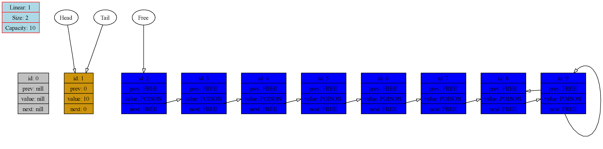

-------------------------------------- Call of function ListDump at int main(), line 10: Head: 0, Tail: 0, Free: 1 Size: 1 Capacity: 10 prev value next 0: 0 0 0 1: 0 781274 2 2: 1 781274 3 3: 2 781274 4 4: 3 781274 5 5: 4 781274 6 6: 5 781274 7 7: 6 781274 8 8: 7 781274 9 9: 8 781274 9 --------------------------------------
-------------------------------------- Call of function ListDump at int main(), line 13: Head: 1, Tail: 1, Free: 2 Size: 2 Capacity: 10 prev value next 0: 0 0 0 1: 0 10 0 2: 1 781274 3 3: 2 781274 4 4: 3 781274 5 5: 4 781274 6 6: 5 781274 7 7: 6 781274 8 8: 7 781274 9 9: 8 781274 9 -------------------------------------- 
-------------------------------------- Call of function ListDump at int main(), line 15: Head: 1, Tail: 2, Free: 3 Size: 3 Capacity: 10 prev value next 0: 0 0 0 1: 0 10 2 2: 1 15 0 3: 2 781274 4 4: 3 781274 5 5: 4 781274 6 6: 5 781274 7 7: 6 781274 8 8: 7 781274 9 9: 8 781274 9 --------------------------------------
-------------------------------------- Call of function ListDump at int main(), line 17: Head: 1, Tail: 3, Free: 4 Size: 4 Capacity: 10 prev value next 0: 0 0 0 1: 0 10 2 2: 1 15 3 3: 2 20 0 4: 3 781274 5 5: 4 781274 6 6: 5 781274 7 7: 6 781274 8 8: 7 781274 9 9: 8 781274 9 --------------------------------------
-------------------------------------- Call of function ListDump at int main(), line 19: Head: 1, Tail: 3, Free: 5 Size: 4 Capacity: 10 prev value next 0: 0 0 0 1: 0 10 2 2: 1 15 4 3: 4 20 0 4: 2 99 3 5: 4 781274 6 6: 5 781274 7 7: 6 781274 8 8: 7 781274 9 9: 8 781274 9 --------------------------------------
-------------------------------------- Call of function ListDump at int main(), line 21: Head: 1, Tail: 4, Free: 5 Size: 4 Capacity: 12 prev value next 0: 0 0 0 1: 0 10 2 2: 1 15 3 3: 2 99 4 4: 3 20 5 5: 4 781274 6 6: 5 781274 7 7: 6 781274 8 8: 7 781274 9 9: 8 781274 10 10: 9 781274 11 11: 10 781274 11 --------------------------------------